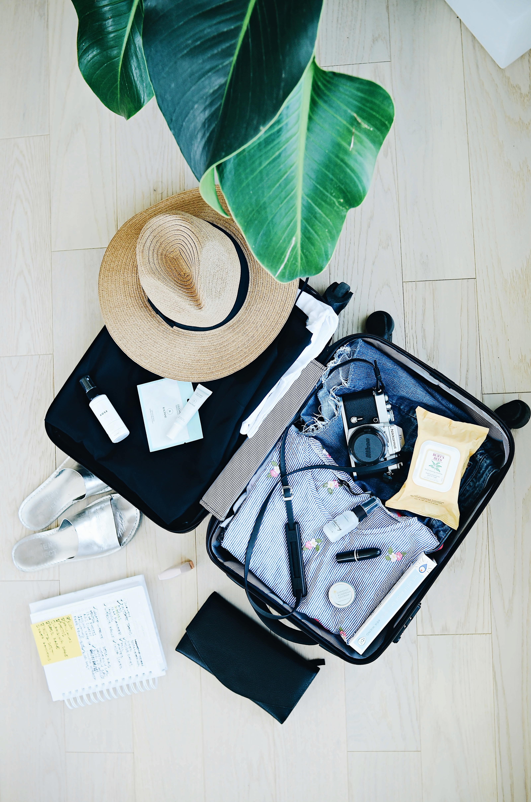
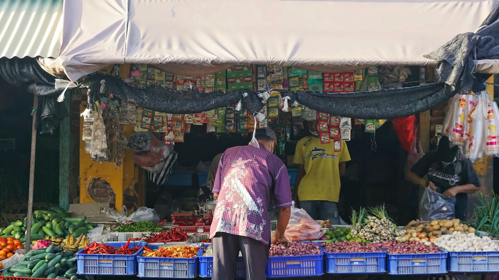

Giappone: tra templi, natura e tradizioni
Templi, paesaggi e tradizioni incontrati lungo un viaggio tra città, natura e piccoli dettagli quotidiani.
Leggi il racconto →Qui troverai i racconti delle mie avventure, consigli pratici fuori dai cliché turistici e, soprattutto, itinerari reali testati in prima persona, pronti per essere vissuti.
Dal più recente
Templi, paesaggi e tradizioni incontrati lungo un viaggio tra città, natura e piccoli dettagli quotidiani.
Leggi il racconto →Templi sull’acqua, risaie e incontri: un’isola da vivere seguendo un ritmo più gentile.
Leggi il racconto →Quartieri, giardini e architetture si incontrano in una città sorprendentemente verde.
Leggi il racconto →
Una guida essenziale per scegliere cosa serve davvero e lasciare spazio alle esperienze.
Articolo in preparazioneCome trovare il ritmo giusto tra tappe programmate e tempo libero.
Articolo in preparazione
Piccoli gesti per vivere un luogo quotidiano senza sentirsi soltanto di passaggio.
Articolo in preparazione